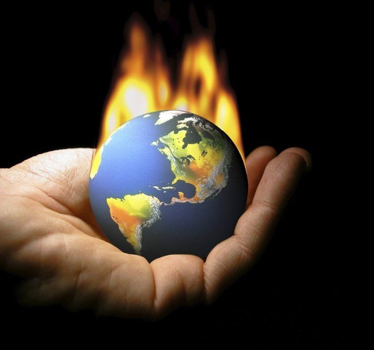
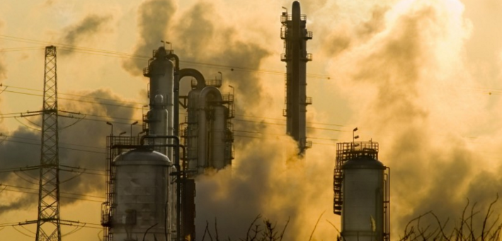

efecto invernadero
El efecto invernadero es un proceso en el que la radiación térmica emitida por la superficie planetaria es absorbida por los gases de efecto invernadero (GEI) atmosféricos y es irradiada en todas las direcciones. Como parte de esta radiación es devuelta hacia la superficie terrestre y la atmósfera inferior, ello resulta en un incremento de la temperatura superficial media respecto a lo que habría en ausencia de los GEI. La radiación solar en frecuencias de la luz visible pasa en su mayor parte a través de la atmósfera para calentar la superficie planetaria, emitiendo posteriormente esta energía en frecuencias menores de radiación térmica infrarroja. Esta última es absorbida por los GEI, los que a su vez irradian mucha de esta energía a la superficie y atmósfera inferior. Este mecanismo recibe su nombre debido a su analogía al efecto de la radiación solar que pasa a través de un vidrio y calienta un invernadero, pero la manera en que atrapa calor la atmósfera es fundamentalmente diferente a como funciona un invernadero de jardinería, que reduce las corrientes de aire, aislando el aire caliente dentro del recinto, evitando la pérdida de calor por convección, aunque el efecto detallado sea algo más complicado.
causas
 Las causas del calentamiento global, también llamados forzamientos externos, son los mecanismos dominantes externos al sistema climático —pero no necesariamente externos a la Tierra— que causan el calentamiento global observado en el registro de temperaturas. Las investigaciones se han centrado en las causas del calentamiento observado desde 1979, período en el que la actividad humana ha tenido un crecimiento más rápido y se han podido realizar mediciones satelitales sobre la alta atmósfera. Las principales causas antropogénicas del calentamiento global son el incremento de las concentraciones atmosféricas de gases de efecto invernadero, los cambios globales en el paisaje y el uso de tierras (como la deforestación) y el incremento de las concentraciones atmosféricas de aerosoles y hollín. Las principales causas no antropogénicas son las variaciones en la luminosidad solar, las erupciones volcánicas y las variaciones orbitales de la Tierra alrededor del Sol. La «detección» es el proceso de demostrar que el clima ha cambiado en cierto sentido estadístico definido, sin proporcionar una razón para ese cambio. La detección no implica la atribución del cambio detectado a una causa particular. La «atribución» de las causas del cambio climático es el proceso de establecer las causas más probables para el cambio detectado con un cierto nivel de confianza definido. La detección y atribución también se pueden aplicar a cambios observados en los sistemas físicos, ecológicos y sociales.